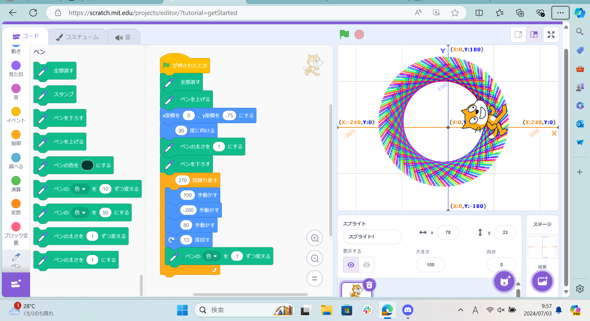
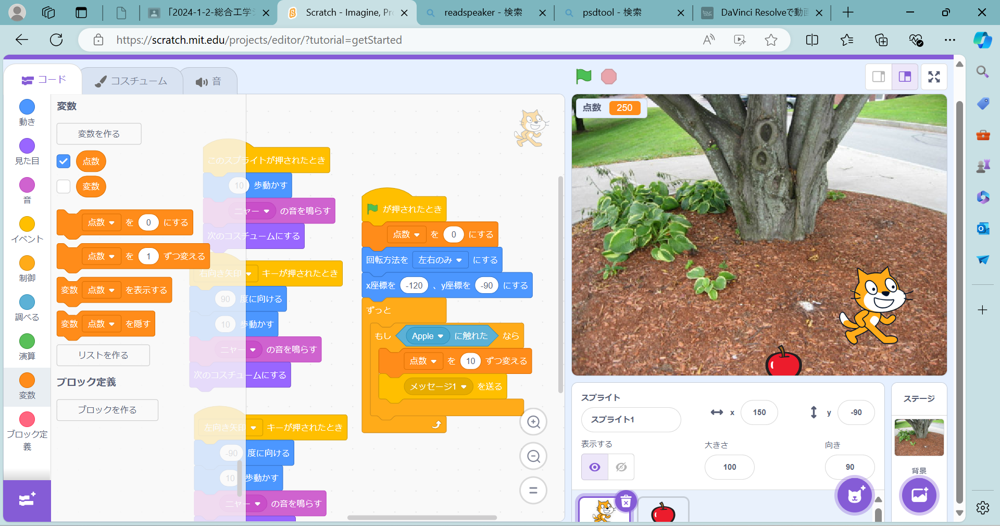

1週目のレポート ： 公大高専１年実習I-1
2A班01番 asaadaaanaaaa
第1週目
1-1 サイエンスアート

1.内容
スクラッチを使って線を書くプログラムを制作した。説明されたものから、プログラムを少し変更した。線を細くして、繰り返す回数を増やした。
2.感想
スクラッチの基本的な操作をしっていたので、困難な部分はなかった。
1-2 ゲーム

1.内容
落ちてくるリンゴを猫がキャッチするゲームを制作した。
2.感想
設定する座標を誤っていたので、うまく動かなかったが、変更すると、正常に動いた。
1-3 ホームページ作成
私のホームページ
1.内容
1週目でやったことをホームページにまとめた。
2.感想
変更したものがすぐに表示される様子を見て、紙で提出せずにデジタルで文章を送れることがとても便利だと感じた。